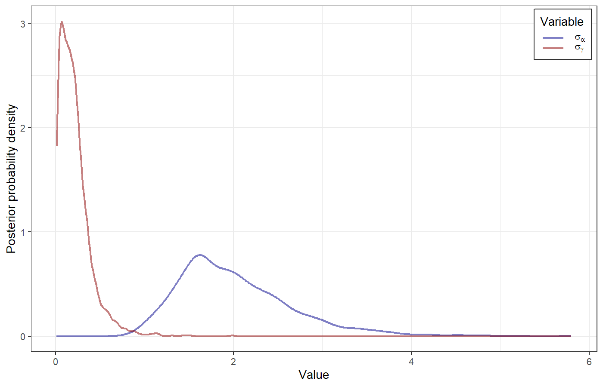
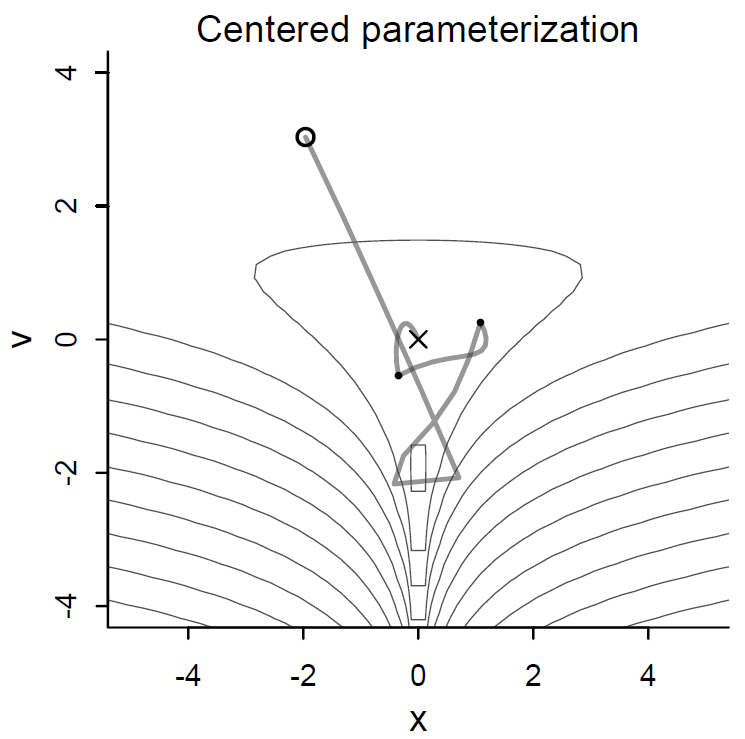
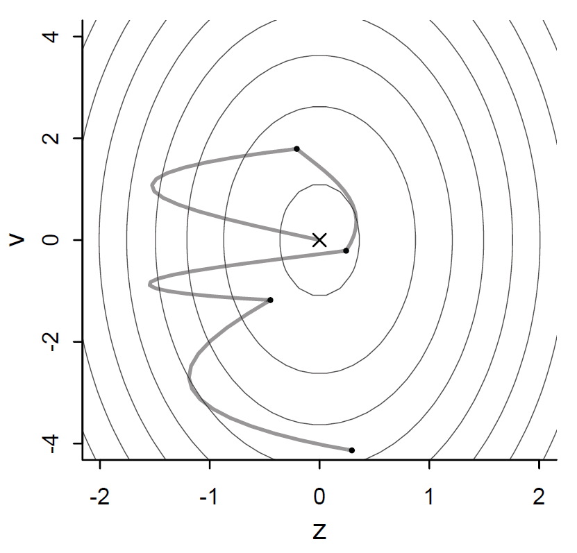
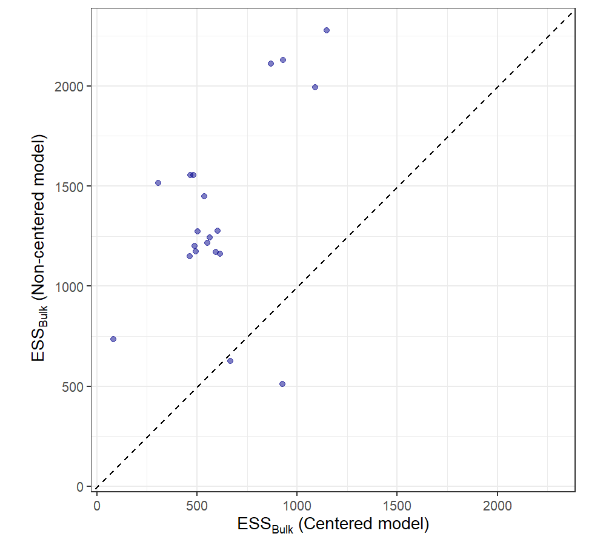
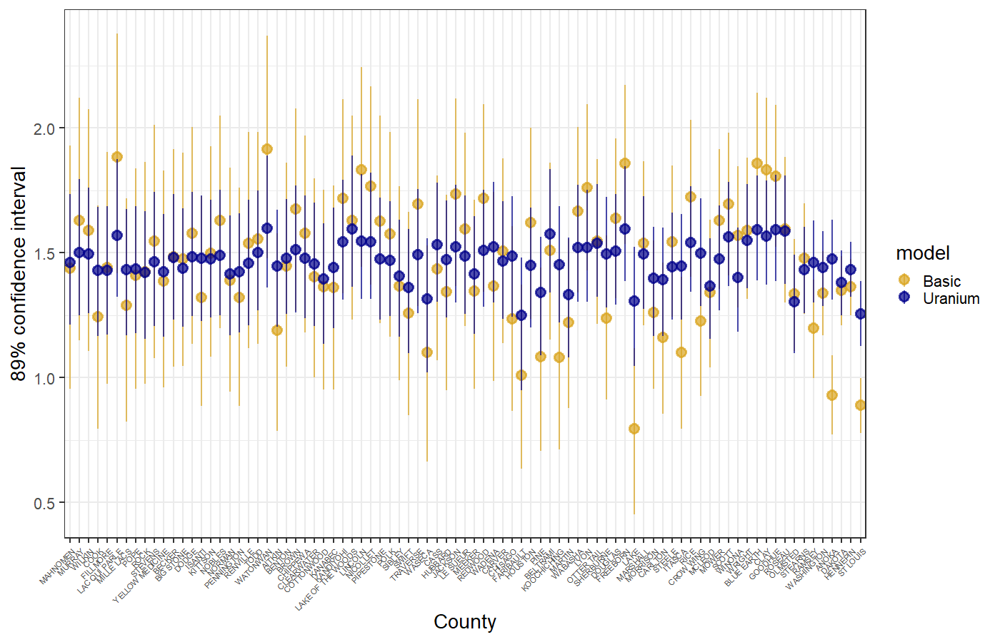
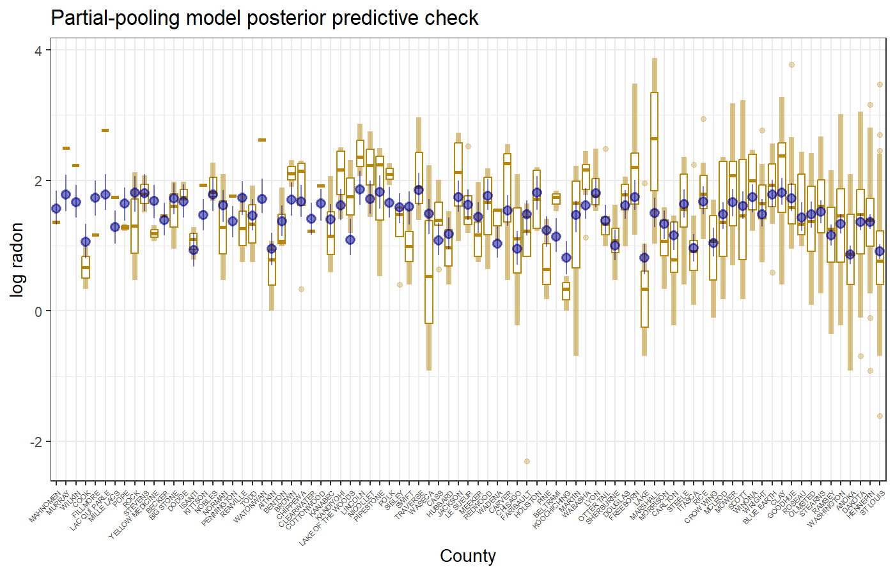

Original Model: \[ \begin{align} L &\sim \text{Binomial}(1, p) \\ \text{logit}(p) &= \alpha_{\text{actor}} + \beta_{\text{treatment}} \\ \alpha &\sim dnorm(0, 1.5) \\ \beta &\sim dnorm(0, 0.5) \end{align} \]
New model:
\[ \begin{align} L &\sim \text{Binomial}(1, p) \\ \text{logit}(p) &= \alpha_{\text{actor}} + \gamma_{\text{block}} + \beta_{\text{treatment}} \\ \beta_{\text{treatment}} &\sim \text{Normal}(0, 0.5), \text{treatment in } 1 \ldots 4 \\ \alpha_{\text{actor}} &\sim \text{Normal}(\bar \alpha, \sigma_\alpha), \text{actor in } 1 \ldots 7 \\ \gamma_{\text{block}} &\sim \text{Normal}(0, \sigma_\gamma), \text{block in } 1 \ldots 6 \\ \bar \alpha &\sim \text{Normal}(0, 1.5) \\ \sigma_\alpha &\sim \text{Exponential}(1) \\ \sigma_\gamma &\sim \text{Exponential}(1) \\ \end{align} \]
This allows for partial pooling across actors and blocks (e.g., most actors tend to pull the right lever, but some prefer the left)
Example of a multilevel model with two different kinds of clusters.
Model code:
set.seed(13)
mdl_chimp.2 <- ulam(
alist(
pulled_left ~ dbinom(1, p),
logit(p) <- a[actor] + g[block_id] + b[treatment],
b[treatment] ~ dnorm(0, 0.5),
## adaptive priors
a[actor] ~ dnorm(a_bar, sigma_a),
g[block_id] ~ dnorm(0, sigma_g),
## hyper-priors
a_bar ~ dnorm(0, 1.5),
sigma_a ~ dexp(1),
sigma_g ~ dexp(1)
), data=dat_list, chains = 4, cores = 4, log_lik = TRUE)Hyperparameters: \(\bar\alpha\), \(\sigma_\alpha\), \(\sigma_\gamma\)
Hyperpriors for the hyperparameters:
\[ \begin{align} \bar \alpha &\sim \text{Normal}(0, 1.5) \\ \sigma_\alpha &\sim \text{Exponential}(1) \\ \sigma_\gamma &\sim \text{Exponential}(1) \\ \end{align} \]
quap) works well for
completely pooled and completely un-pooled data
ulam): imaginary particle
moving in N-dimensional space, varying all parameters
simultaneously.Model 1 (the old one)
## mean sd 5.5% 94.5% rhat ess_bulk
## b[1] -0.01 0.28 -0.48 0.42 1 617.56
## b[2] 0.52 0.29 0.05 0.99 1 670.66
## b[3] -0.35 0.28 -0.79 0.08 1 717.91
## b[4] 0.40 0.28 -0.06 0.85 1 697.56
## a[1] -0.48 0.34 -0.99 0.07 1 800.53
## a[2] 3.88 0.77 2.72 5.24 1 1160.62
## a[3] -0.79 0.33 -1.31 -0.26 1 786.29
## a[4] -0.78 0.33 -1.31 -0.26 1 785.30
## a[5] -0.49 0.32 -1.00 0.04 1 712.42
## a[6] 0.44 0.34 -0.07 0.99 1 790.12
## a[7] 1.93 0.42 1.30 2.64 1 1044.93Model 2 (multilevel)
## mean sd 5.5% 94.5% rhat ess_bulk
## b[1] -0.12 0.28 -0.58 0.31 1.01 616.79
## b[2] 0.40 0.29 -0.05 0.87 1.01 594.26
## b[3] -0.47 0.29 -0.96 -0.02 1.00 563.73
## b[4] 0.29 0.29 -0.17 0.75 1.01 488.59
## a[1] -0.35 0.34 -0.90 0.19 1.01 502.88
## a[2] 4.73 1.38 3.05 7.31 1.01 467.66
## a[3] -0.66 0.36 -1.24 -0.08 1.01 601.74
## a[4] -0.68 0.35 -1.23 -0.10 1.00 493.56
## a[5] -0.36 0.34 -0.91 0.19 1.01 463.32
## a[6] 0.58 0.35 0.03 1.13 1.02 552.05
## a[7] 2.13 0.47 1.40 2.87 1.01 536.20
## g[1] -0.17 0.23 -0.59 0.08 1.02 306.83
## g[2] 0.03 0.18 -0.25 0.35 1.02 869.80
## g[3] 0.04 0.19 -0.22 0.36 1.02 1146.86
## g[4] 0.00 0.19 -0.30 0.31 1.03 1089.58
## g[5] -0.03 0.18 -0.35 0.23 1.01 930.26
## g[6] 0.10 0.19 -0.14 0.44 1.02 482.86
## a_bar 0.62 0.72 -0.53 1.84 1.01 926.48
## sigma_a 2.02 0.64 1.21 3.17 1.01 665.96
## sigma_g 0.21 0.18 0.02 0.53 1.05 82.00Model:
\[ \begin{align} L &\sim \text{Binomial}(1, p) \\ \text{logit}(p) &= \alpha_{\text{actor}} + \gamma_{\text{block}} + \beta_{\text{treatment}} \\ \beta_{\text{treatment}} &\sim \text{Normal}(0, 0.5), \text{treatment in } 1 \ldots 4 \\ \alpha_{\text{actor}} &\sim \text{Normal}(\bar \alpha, \sigma_\alpha), \text{actor in } 1 \ldots 7 \\ \gamma_{\text{block}} &\sim \text{Normal}(0, \sigma_\gamma), \text{block in } 1 \ldots 6 \end{align} \]

Model code:
set.seed(13)
mdl_chimp.3 <- ulam(
alist(
pulled_left ~ dbinom(1, p),
logit(p) <- a[actor] + b[treatment],
b[treatment] ~ dnorm(0, 0.5),
## adaptive priors
a[actor] ~ dnorm(a_bar, sigma_a),
## hyper-priors
a_bar ~ dnorm(0, 1.5),
sigma_a ~ dexp(1)
), data=dat_list, chains = 4, cores = 4, log_lik = TRUE)Compare the models:
Model 3 works is slightly better than the original model, and model 2 (with the block clusters) is worst.
adapt_delta closer to 1.
adapt_delta is the target acceptance rate used in the
tuning (warm-up) phase to adjust the parameters.adapt_delta closer to 1 leads to more accurate
sampling, but slows Stan down.mdl_funnel <- ulam(
alist(
v ~ normal(0, 3),
x ~ normal(0, exp(v))
), data = list(N = 1), chains = 4, cores = 4)## mean sd 5.5% 94.5% rhat ess_bulk
## v 1.93 2.23 -0.85 6.34 1.21 14.51
## x -70.15 395.41 -252.73 24.22 1.21 98.44## Warning: 87 of 2000 (4.0%) transitions ended with a divergence.
## See https://mc-stan.org/misc/warnings for details.## $num_divergent
## [1] 15 40 26 6Why do divergences happen?
Potential-energy surface:

Original (centered) model: \[ \begin{align} \nu &\sim \text{Normal}(0, 3) \\ x &\sim \text{Normal}(0, \exp(\nu)) \end{align} \]
Prior for \(x\) depends on \(\nu\)
Non-centered version: \[ \begin{align} \nu &\sim \text{Normal}(0, 3) \\ z &\sim \text{Normal}(0, 1) \\ x &= z \exp(\nu) \end{align} \]
Prior for \(z\) is independent of \(\nu\), generate \(x\) by scaling \(z\).
This flattens the steep parts by sampling from two Normal distributions and the steep stuff only shows up when we multiply them together.

Original model:
mdl_funnel <- ulam(
alist(
v ~ normal(0, 3),
x ~ normal(0, exp(v))
), data = list(N = 1), chains = 4, cores = 4)## mean sd 5.5% 94.5% rhat ess_bulk
## v 1.93 2.23 -0.85 6.34 1.21 14.51
## x -70.15 395.41 -252.73 24.22 1.21 98.44## Warning: 87 of 2000 (4.0%) transitions ended with a divergence.
## See https://mc-stan.org/misc/warnings for details.## $num_divergent
## [1] 15 40 26 6Non-centered model:
mdl_funnel_nc <- ulam(
alist(
v ~ normal(0, 3),
z ~ normal(0, 1),
gq> real[1]:x <<- z*exp(v)
), data=list(N=1) , chains=4 )## mean sd 5.5% 94.5% rhat ess_bulk
## v 0.03 3.12 -4.90 4.85 1.00 1503.28
## z 0.00 0.98 -1.58 1.50 1.00 1218.99
## x -38.58 2237.40 -28.03 24.71 1.01 1393.42## $num_divergent
## [1] 0 0 0 0set.seed(13)
mdl_chimp.2 <- ulam(
alist(
pulled_left ~ dbinom(1, p),
logit(p) <- a[actor] + g[block_id] + b[treatment],
b[treatment] ~ dnorm(0, 0.5),
## adaptive priors
a[actor] ~ dnorm(a_bar, sigma_a),
g[block_id] ~ dnorm(0, sigma_g),
## hyper-priors
a_bar ~ dnorm(0, 1.5),
sigma_a ~ dexp(1),
sigma_g ~ dexp(1)
), data=dat_list, chains = 4, cores = 4, log_lik = TRUE)## mean sd 5.5% 94.5% rhat ess_bulk
## a_bar 0.62 0.72 -0.53 1.84 1.01 926.48
## sigma_a 2.02 0.64 1.21 3.17 1.01 665.96
## sigma_g 0.21 0.18 0.02 0.53 1.05 82.00## Warning: 11 of 2000 (1.0%) transitions ended with a divergence.
## See https://mc-stan.org/misc/warnings for details.## $num_divergent
## [1] 0 0 11 0adapt_delta from 0.95 to 0.99:set.seed(13)
mdl_chimp.4 <- ulam(mdl_chimp.2, chains = 4, cores = 4,
control = list(adapt_delta = 0.99))## mean sd 5.5% 94.5% rhat ess_bulk
## a_bar 0.56 0.74 -0.59 1.76 1.00 896.99
## sigma_a 2.03 0.69 1.22 3.26 1.00 851.11
## sigma_g 0.18 0.18 0.01 0.50 1.03 107.82## Warning: 9 of 2000 (0.0%) transitions ended with a divergence.
## See https://mc-stan.org/misc/warnings for details.## $num_divergent
## [1] 0 4 5 0set.seed(13)
mdl_chimp_nc <- ulam(
alist(
pulled_left ~ dbinom(1, p) ,
logit(p) <- a_bar + z[actor] * sigma_a +
x[block_id] * sigma_g +
b[treatment],
b[treatment] ~ dnorm(0, 0.5),
z[actor] ~ dnorm(0, 1),
x[block_id] ~ dnorm(0, 1),
a_bar ~ dnorm(0, 1.5),
sigma_a ~ dexp(1),
sigma_g ~ dexp(1),
gq> vector[actor]:a <<- a_bar + z * sigma_a,
gq> vector[block_id]:g <<- x * sigma_g
), data = dat_list, chains = 4, cores = 4)## mean sd 5.5% 94.5% rhat ess_bulk
## a_bar 0.62 0.74 -0.51 1.79 1.01 509.90
## sigma_a 2.06 0.67 1.22 3.28 1.00 625.83
## sigma_g 0.20 0.16 0.02 0.50 1.01 734.24## $num_divergent
## [1] 0 0 0 0
## mean sd 5.5% 94.5% rhat ess_bulk
## b[1] -0.11 0.31 -0.59 0.38 1.02 338.77
## b[2] 0.43 0.30 -0.07 0.90 1.01 343.49
## b[3] -0.45 0.31 -0.94 0.06 1.01 442.27
## b[4] 0.31 0.31 -0.19 0.81 1.01 447.73
## a[1] -0.39 0.36 -0.97 0.18 1.01 518.25
## a[2] 4.68 1.43 2.98 6.99 1.01 648.44
## a[3] -0.70 0.38 -1.30 -0.10 1.01 435.22
## a[4] -0.70 0.37 -1.26 -0.13 1.01 460.22
## a[5] -0.39 0.37 -0.99 0.20 1.01 439.61
## a[6] 0.54 0.37 -0.04 1.11 1.01 437.74
## a[7] 2.08 0.48 1.33 2.87 1.01 542.35
## g[1] -0.14 0.22 -0.56 0.07 1.01 405.53
## g[2] 0.03 0.18 -0.22 0.33 1.02 809.69
## g[3] 0.05 0.18 -0.19 0.36 1.02 646.92
## g[4] 0.01 0.17 -0.23 0.28 1.02 831.97
## g[5] -0.02 0.18 -0.29 0.24 1.01 886.57
## g[6] 0.10 0.19 -0.12 0.47 1.01 636.02
## a_bar 0.56 0.74 -0.59 1.76 1.00 896.99
## sigma_a 2.03 0.69 1.22 3.26 1.00 851.11
## sigma_g 0.18 0.18 0.01 0.50 1.03 107.82## mean sd 5.5% 94.5% rhat ess_bulk
## b[1] -0.14 0.31 -0.63 0.35 1.00 1162.45
## b[2] 0.40 0.30 -0.08 0.88 1.00 1171.39
## b[3] -0.48 0.30 -0.97 -0.01 1.00 1244.50
## b[4] 0.27 0.30 -0.20 0.76 1.00 1200.03
## z[1] -0.51 0.39 -1.14 0.10 1.01 460.24
## z[2] 2.09 0.63 1.13 3.13 1.00 1010.57
## z[3] -0.67 0.41 -1.33 -0.03 1.01 463.71
## z[4] -0.67 0.41 -1.34 -0.03 1.01 435.74
## z[5] -0.52 0.39 -1.18 0.10 1.01 452.48
## z[6] -0.02 0.37 -0.60 0.57 1.01 497.16
## z[7] 0.81 0.46 0.12 1.59 1.00 622.35
## x[1] -0.67 0.89 -2.01 0.83 1.00 2253.53
## x[2] 0.19 0.87 -1.17 1.55 1.00 2006.40
## x[3] 0.21 0.83 -1.13 1.51 1.00 2486.69
## x[4] 0.06 0.83 -1.26 1.40 1.00 1870.83
## x[5] -0.11 0.84 -1.41 1.21 1.00 2073.95
## x[6] 0.46 0.85 -0.86 1.80 1.00 1946.22
## a_bar 0.62 0.74 -0.51 1.79 1.01 509.90
## sigma_a 2.06 0.67 1.22 3.28 1.00 625.83
## sigma_g 0.20 0.16 0.02 0.50 1.01 734.24
## g[1] -0.16 0.21 -0.57 0.07 1.00 1516.18
## g[2] 0.04 0.18 -0.20 0.33 1.00 2112.49
## g[3] 0.05 0.18 -0.19 0.36 1.00 2278.83
## g[4] 0.02 0.17 -0.25 0.29 1.01 1993.91
## g[5] -0.03 0.17 -0.31 0.23 1.01 2128.82
## g[6] 0.11 0.19 -0.11 0.45 1.00 1554.64
## a[1] -0.35 0.37 -0.94 0.26 1.00 1271.86
## a[2] 4.73 1.32 3.15 6.99 1.00 1555.23
## a[3] -0.65 0.38 -1.25 -0.03 1.00 1275.61
## a[4] -0.66 0.37 -1.25 -0.07 1.00 1174.44
## a[5] -0.36 0.37 -0.95 0.24 1.00 1150.48
## a[6] 0.58 0.36 -0.01 1.15 1.00 1215.21
## a[7] 2.13 0.46 1.42 2.87 1.00 1449.84ml_data <- select(mn_radon, county_id, log_radon, floor)
mdl_ml_1 <- ulam(
alist(
log_radon ~ dnorm(mu, sigma),
mu <- a[county_id] + b * floor,
a[county_id] ~ dnorm(a_bar, sig_a),
b ~ dnorm(0, 10),
sigma ~ dexp(1),
a_bar ~ dnorm(0, 10),
sig_a ~ dexp(1)
), data = ml_data, chains = 4, cores = 4, log_lik = TRUE)precis(mdl_ml_1, digits = 2, depth = 2,
pars = c("a_bar", "sig_a", "b", "sigma",
paste0("a[", 1:5, "]")))## mean sd 5.5% 94.5% rhat ess_bulk
## a_bar 1.46 0.05 1.38 1.54 1.00 987.00
## sig_a 0.33 0.05 0.26 0.41 1.00 768.82
## b -0.69 0.07 -0.80 -0.59 1.00 1393.98
## sigma 0.76 0.02 0.73 0.78 1.00 2419.80
## a[1] 1.19 0.25 0.79 1.58 1.01 2851.87
## a[2] 0.93 0.10 0.77 1.09 1.00 2181.96
## a[3] 1.48 0.27 1.04 1.91 1.00 2730.30
## a[4] 1.51 0.22 1.15 1.86 1.00 2473.64
## a[5] 1.45 0.26 1.05 1.86 1.01 2887.43ml_data_2 <- select(mn_radon, county_id, log_radon, floor, log_uranium)
mdl_ml_2 <- ulam(
alist(
log_radon ~ dnorm(mu, sigma),
mu <- a[county_id] + b * floor + g * log_uranium,
a[county_id] ~ dnorm(a_bar, sig_a),
b ~ dnorm(0, 2),
sigma ~ dexp(1),
a_bar ~ dnorm(0, 2),
sig_a ~ dexp(1),
g ~ dnorm(0, 2)
), data = ml_data_2, chains = 4, cores = 4, log_lik = TRUE)precis(mdl_ml_2, digits = 2, depth = 2,
pars = c("a_bar", "sig_a", "b", "sigma", "g",
paste0("a[", 1:5, "]")))## mean sd 5.5% 94.5% rhat ess_bulk
## a_bar 1.47 0.04 1.40 1.53 1.00 512.25
## sig_a 0.16 0.05 0.08 0.24 1.01 116.30
## b -0.67 0.07 -0.78 -0.56 1.00 1370.74
## sigma 0.76 0.02 0.73 0.79 1.00 1839.65
## g 0.72 0.09 0.58 0.86 1.00 1638.50
## a[1] 1.45 0.15 1.20 1.67 1.00 2226.16
## a[2] 1.48 0.10 1.31 1.63 1.00 1911.11
## a[3] 1.48 0.16 1.23 1.73 1.01 2607.32
## a[4] 1.58 0.16 1.34 1.84 1.00 576.29
## a[5] 1.48 0.15 1.25 1.72 1.00 2312.81ml_1_draws <- gather_draws(mdl_ml_1, a[county_id]) |> ungroup() |>
left_join(select(mn_counties, county_id, county), by = "county_id") |>
mutate(model = "Basic")
ml_1_sum <- ml_1_draws |> group_by(county, county_id, model) |>
summarize(mean = mean(.value), PI = list(set_names(PI(.value), c("lower", "upper")))) |>
unnest_wider(PI)
ml_2_draws <- gather_draws(mdl_ml_2, a[county_id]) |> ungroup() |>
left_join(select(mn_counties, county_id, county, log_uranium),
by = "county_id") |>
mutate(model = "Uranium")
ml_2_sum <- ml_2_draws |> group_by(county, county_id, model) |>
summarize(mean = mean(.value), PI = list(set_names(PI(.value), c("lower", "upper")))) |>
unnest_wider(PI)ggplot(ml_2_sum, aes(x = county, y = mean, ymin = lower, ymax = upper, color = model)) +
geom_pointrange(data = ml_1_sum, alpha = 0.7) +
geom_pointrange(alpha = 0.7) +
scale_color_manual(values = c(Uranium = "darkblue", Basic = "goldenrod")) +
labs(x = "County", y = "89% confidence interval", title = ) +
theme(axis.text.x = element_text(size = 8, angle = 45, hjust = 1, vjust = 1))

Predict representative population-level effects \(\mu_{\text{population}}\) by weighting regression results \(\mu_i\) for different groups by relative abundance of those groups in the whole population.
\[ \mu_{\text{population}} = \frac{\sum_i N_i \mu_i}{\sum_i N_i} \]